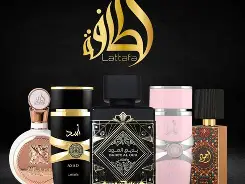

Las marcas y modelos más reconocidos de perfumes árabes
El universo de los perfumes árabes vive un momento histórico. Sus fragancias intensas, cálidas y altamente duraderas conquistaron tanto a expertos como a nuevos consumidores. Detrás de este fenómeno se encuentran marcas que lograron posicionarse globalmente por su calidad, su estética y sus ingredientes tradicionales como el oud, el ámbar gris y el almizcle.

1. Lattafa Perfumes: la marca más viral del mundo árabe
Lattafa se convirtió en la puerta de entrada al mundo de la perfumería árabe gracias a su excelente relación precio-calidad. Hoy es la marca más mencionada en TikTok, YouTube y reseñas de usuarios.
Modelos destacados:
- Khamrah — dulce, especiado y comparado con Angel’s Share.
- Oud for Glory — uno de los ouds más potentes del mercado.
- Velvet Oud — económico, intenso y favorito de invierno.
- Asad — conocido como el “Sauvage árabe”.
2. Arabian Oud: la casa de lujo del Medio Oriente
Con más de 40 años de trayectoria, Arabian Oud es una de las perfumerías más prestigiosas de Arabia Saudita. Sus productos mezclan tradición, lujo y materias primas de alta calidad. Es una marca muy valorada por coleccionistas.
Modelos destacados: Kalemat, Madawi, Arabian Knight Silver.
3. Ajmal: tradición con elegancia
Ajmal es una de las casas más antiguas, fundada en 1951. Sus fragancias se caracterizan por un equilibrio perfecto entre notas orientales y acordes florales. Es una marca muy apreciada por quienes buscan perfumes cálidos, sofisticados y duraderos.
Modelos destacados: Amber Wood, Aristocrat, Sacrifice for Her.
4. Swiss Arabian: fusión árabe-occidental
Swiss Arabian combina técnicas de perfumería francesa con tradición árabe, logrando fragancias modernas que funcionan tanto de día como de noche. Es una marca muy recomendada para quienes buscan empezar en este mundo sin aromas tan intensos.
Modelos destacados: Shaghaf Oud, Casablanca, Rose 01.

¿Qué hace destacar realmente a estas marcas?
Varias características explican por qué estas casas de perfumería lideran el mercado árabe y compiten incluso con marcas de renombre internacional:
- Ingredientes puros como oud natural, almizcle, resinas y especias.
- Larga duración — muchas fragancias superan las 10 horas.
- Proyección intensa — dejan estela sin ser abrumadoras.
- Diseños llamativos inspirados en la cultura árabe.
- Precios accesibles comparados con perfumes de diseñador.
Un mercado en crecimiento global
Gracias a su expansión en redes sociales, estas marcas ahora son elegidas por personas de todas las edades y de todas partes del mundo. Su combinación de lujo, tradición y accesibilidad las convierte en una alternativa ideal para quienes quieren destacarse con aromas únicos.
← Volver a publicaciones